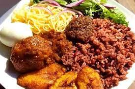

WAAKYE

This dish in eaten with milk by one's side due to its spicyness.
So watch out to those who can't handle the heat.
It is a mixture of boiled beans and rice supplemented with vegetables and meat.
It's signature is the shito which is a made up of different spices and proteins. It is a delight as well.
Ingredients
- Rice
- Beans
- vegetables
- Tomatoes
- Onions
- Carrots
- Cucumber
- Pepper
- Cabbage
- Green Pepper
- Shito
- Cooking oil
- Patience
- Time
Steps
- Boil beans and rice separately.
- Add rice to beans when done and add specific leave to add colour to the mixture.
- Chop vegetables and fry to get your stew.
- Fry or boil your meat.
- Buy pre-made shito or prepare yourself.
- Serve with vegetables, meat and egg (optional).
- Add shito to obtain the best delight.
- Enjoy your meal.